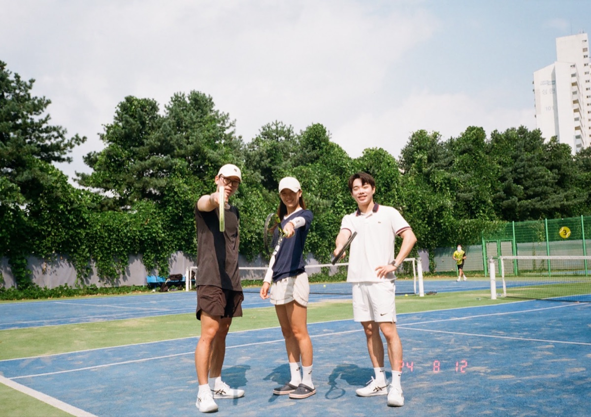
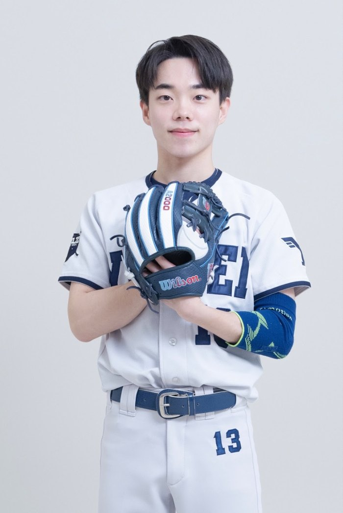
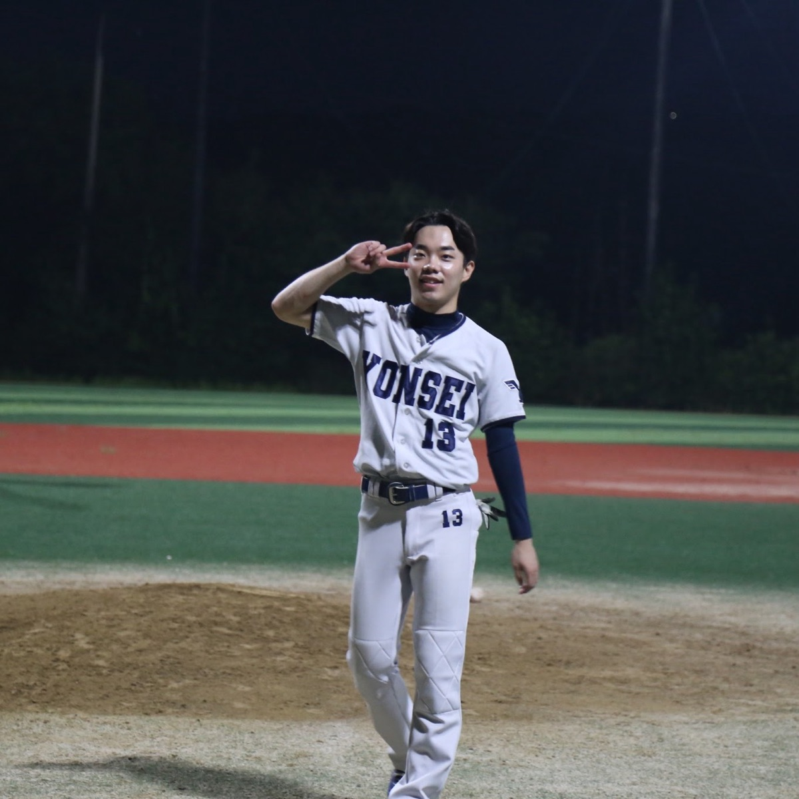
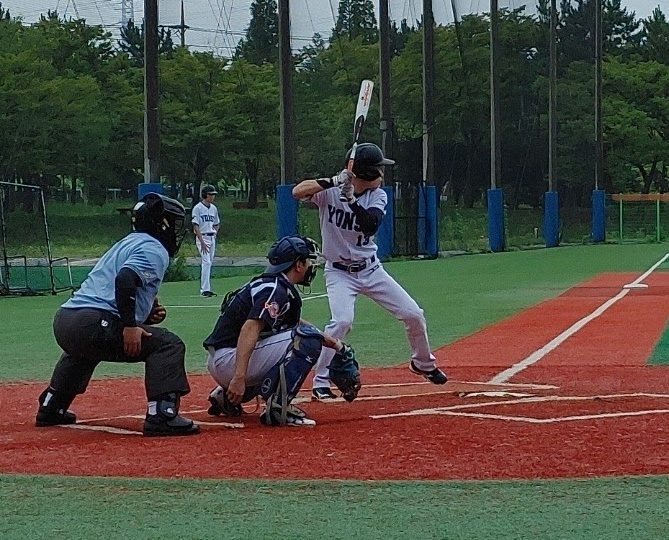
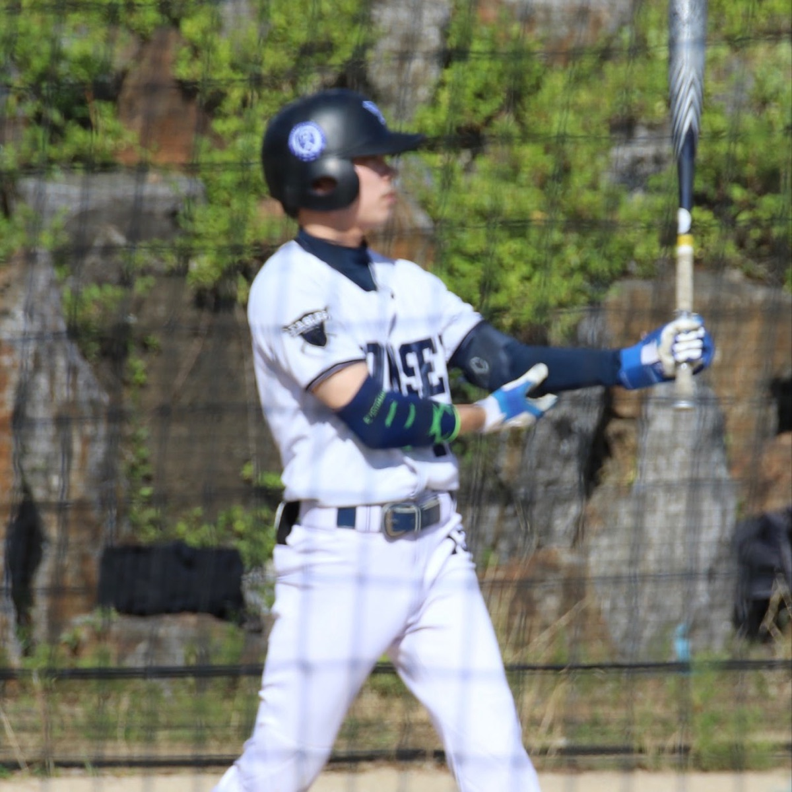
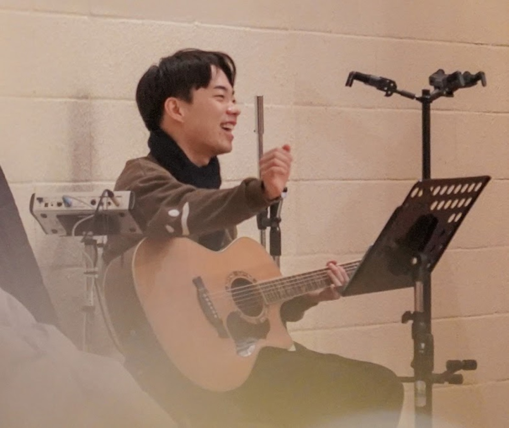
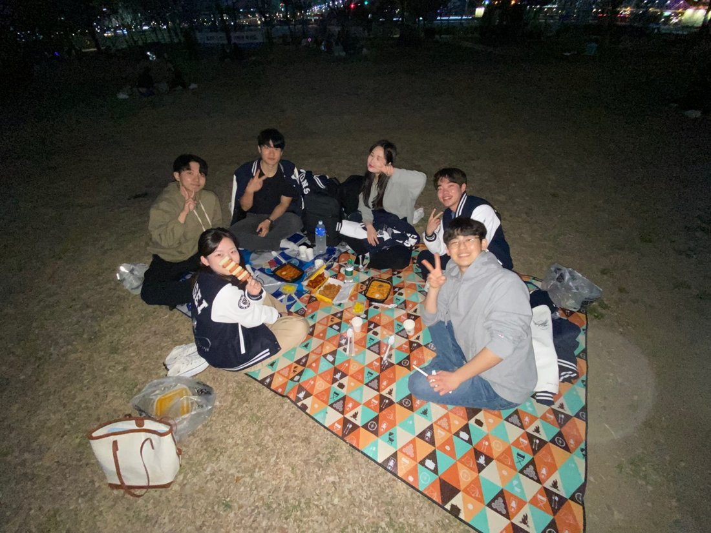
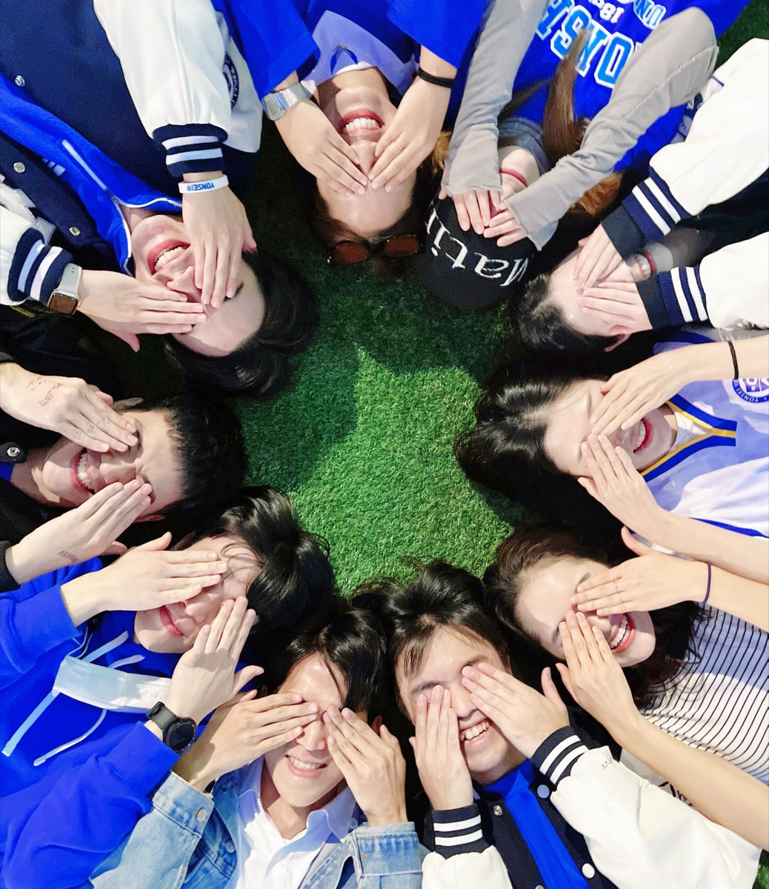
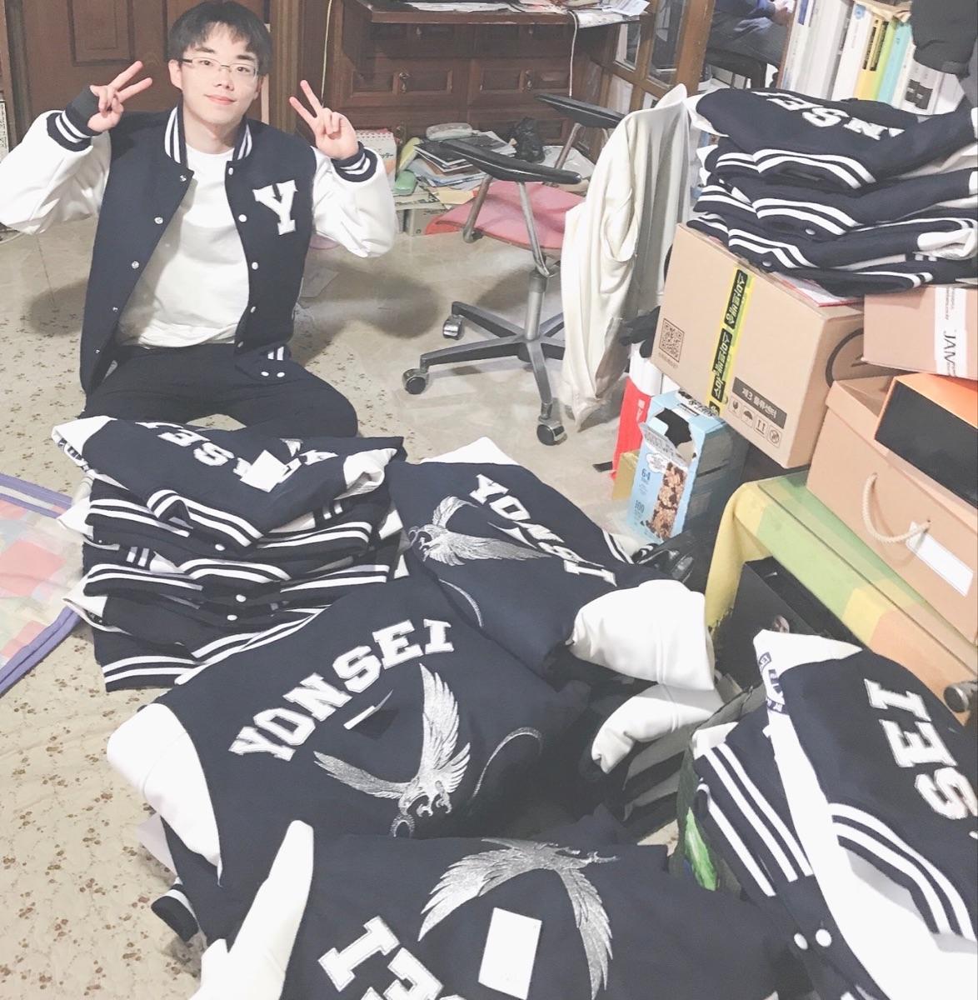

Outside Academia
Forthcoming Fellowship (Korean Sociologist Prayers in America)
Forthcoming is a fellowship group for Korean sociology students and scholars in the United States that I founded in 2026. We meet online every other week to reflect on why we do sociology, what direction our scholarship should take, and how we understand our work as a calling. We also discuss social issues, share our lives, pray for our society, and support one another as a community. I have served as the group’s leader since its founding. We are now reading a book “Every Good Endeavor” together.

Tennis
After retiring from baseball, I developed a strong interest in tennis. I’ve been playing since 2023, and I enjoy hitting with anyone who wants to play.




Baseball
I was an infielder and defensive coach in Yonsei Eagles Baseball Team. The team won the 2025 Mmove National University Club Baseball Championship and finished 3rd in the 2022 Korea University Sports Federation (KUSF) National Club Championship. We also won the Yonsei University President’s Cup Baseball Championship in 2020–2023.
My cumulative statistics from the 2020–2023 seasons are .500 / .762 / .500 (OPS 1.262), and I was the stolen base leader in the 2023 season. My primary position was shortstop.
Before entering university, I also played as an infielder and pitcher for the Seoun Middle School Baseball Team. I love playing baseball and enjoy watching both MLB and KBO.

Guitar
I’ve been playing the guitar since 2015, and I used to play in a church worship team. It’s a hobby that brings me a sense of peace, and I often play whenever I need to rest and recharge.

Sagwim (Yonsei Sociology Fellowship)
Sagwim (Fellowship in Korean) is a sociology-based fellowship group that I founded in 2022. I served as its leader from 2022 to 2024, guiding weekly gatherings where we discuss social issues, shared our lives, and pray together for our society. We continue to meet every week to share our lives and support one another as a community.

Joy Mission Yonsei
I have been part of Joy Mission since 2020. I served as Treasurer in 2023 and as President in 2025, leading weekly worship and fellowship gatherings where members shared their lives, supported one another, and engaged in volunteer activities. We strive to learn how to love one another and to grow together as a community committed to personal and spiritual development.

Yonsei Sociology Student Council
I served as the Vice Representative of the Sociology Class of 2020, where I coordinated the production of custom department jackets and organized events while leading initiatives to improve the student lounge.